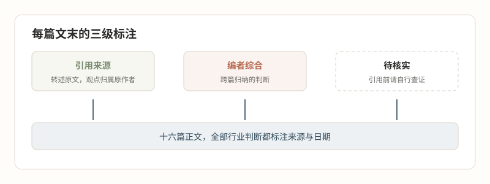

关关于
关于实然指南
一份写给转行决策者的行业读本，只讲实然，不讲应然。
这是什么
《实然指南》是一套完整的大厂人转行医美读本，共十六篇，面向正在考虑转行医美的互联网从业者与名校毕业生。
市面上关于医美转行的内容，多半在两个极端之间摇摆。一边是招聘软文，只讲机会不讲代价；一边是猎奇稿，只讲乱象不讲结构。本站尝试第三种写法——把行业的实际状况原样摆出来，钱在谁账上、权力在谁手里、进来的人每一天会遇到什么，然后让读者自己做决定。
四个部分回答四个问题。认识医美（第 02 至 05 篇）讲这是什么行业；怎么进（第 06 至 09 篇）讲路径与落地；会经历什么（第 10 至 13 篇）讲入职后的真实日常；名校生专题（第 14 至 15 篇）讲高学历背景的机会与代价。第 16 篇是一页纸决策清单，全站的收口。
时间紧的读者有三篇的最小读法——第 02 篇看懂行业结构，第 08 篇看懂跨界规律，第 16 篇拿走决策工具。
编辑原则
全站只做实然写作。每个核心判断都挂在可查证的事实上，来源与日期随文标注；涉及建议的地方只用条件判断的句式——如果你要的是这个，在现状下你大概率会遇到那个；行业丑处和好处都写在明处；没有可靠出处的内容明确标注待核实，不用想象补齐。
每篇文末的"本篇引用与待核实"分三类。引用来源是转述行业文章的直接观点，观点归属原作者；编者综合是跨篇归纳的判断；待核实是截至发布仍无法确认的信息，读者引用前请自行查证。

来源
本站行业事实的主要来源，是消费医疗行业从业者李滨的"医美之滨"公众号文章（2018 至 2026 年），以及行业公开信息。原作者立场属于行业"回归医疗"一派，本站在多篇正文中同时呈现了另一派（销售导向）的实况，不替读者选边。
姊妹读本《医美咨询师成长教程》（一路绿灯成长站）面向零背景入行者，与本站互相独立、互为补充。
声明
本站全部内容为职业叙事与决策参考，不构成医疗建议，不构成投资建议，不用于诊断、治疗或任何项目的推荐。
第 13 篇的人物为依据行业结构事实与公开自述构建的人物原型，用于呈现转行结果的模式分布，不指向真实个体。
行业数据与监管政策随时间变化，文中一切涉及当前行情与法规的内容以最新权威原文为准。本站内容按语料引用日期如实呈现，读者使用前请自行核对时效。
© 2026 实然指南。转载请注明出处并保留来源标注。